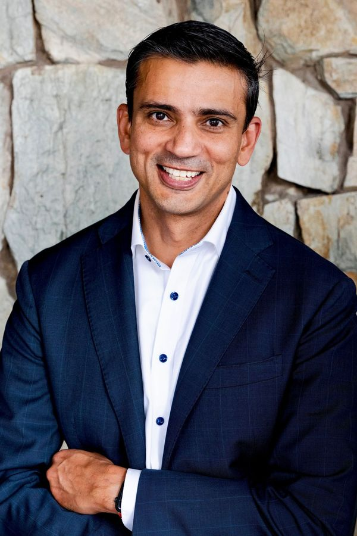
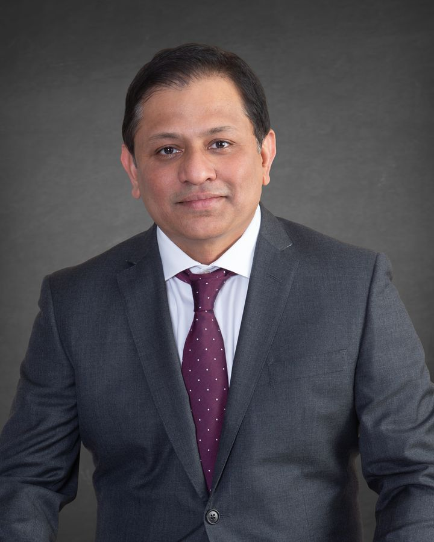
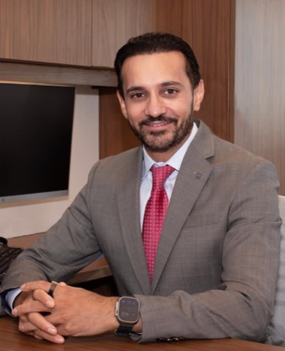
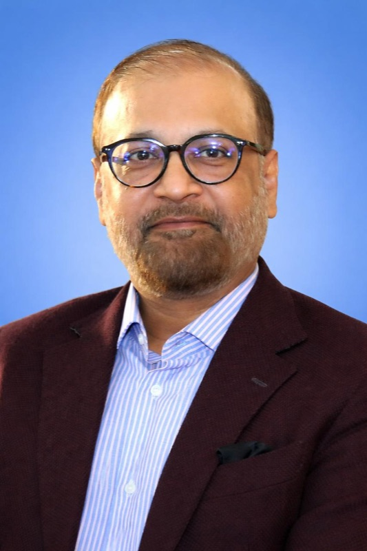
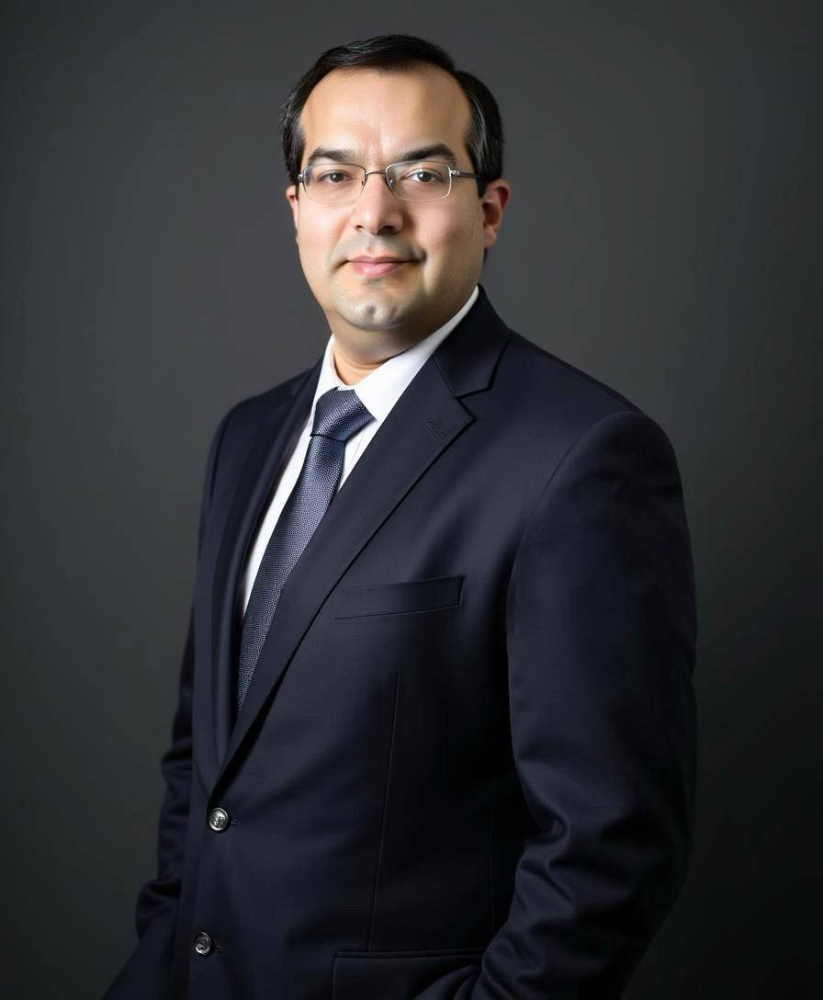
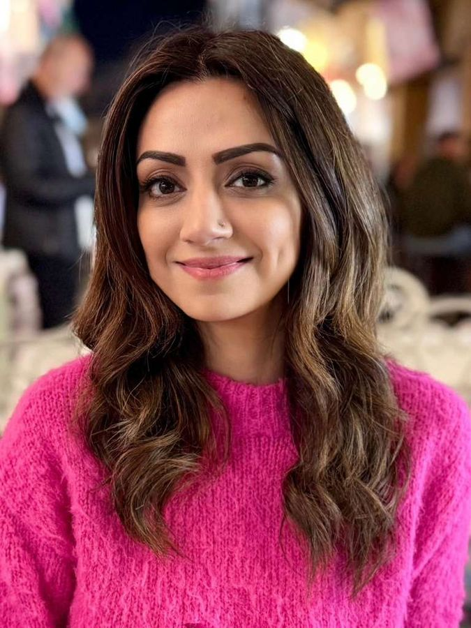
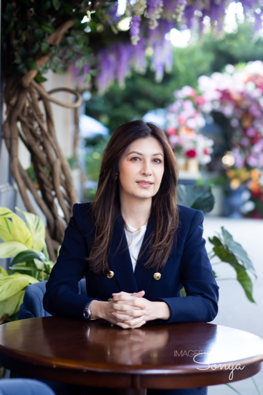
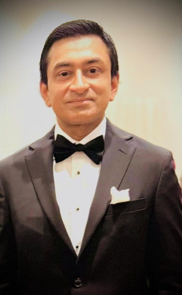
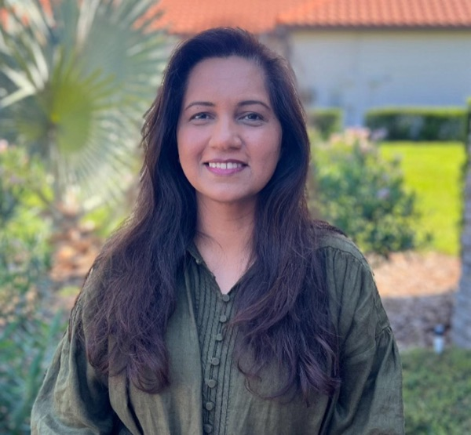

About Us
Our story, mission, and the passionate team transforming stroke care in Pakistan.
Raho Stroke se Aagay
About Pakistan Stroke Initiative
The Pakistan Stroke Initiative (PSI) is a 501(c)(3) nonprofit organization founded by Pakistani-American physicians who witnessed firsthand the devastating gap in stroke care in Pakistan. With over 240 million people and fewer than a handful of trained neurointerventionalists, Pakistan loses thousands of lives each year to strokes that could be treated.
PSI bridges this gap by training local physicians, equipping hospitals with modern neuroangiography suites, and providing direct patient care through regular clinical missions.
What started as a small group of dedicated doctors has grown into a nationwide movement — with chapter leaders across the United States, partnerships with leading medical institutions, and a shared vision: that no Pakistani should die from a treatable stroke.
Our Mission
To transform stroke care in Pakistan by training physicians, equipping hospitals with modern technology, and providing free, life-saving treatment to patients who would otherwise have no access to care.
Our Vision
A Pakistan where no one dies from a treatable stroke — where every hospital has trained specialists and equipment needed to save lives, regardless of a patient's ability to pay.
Co-Founders
The founding physicians who launched Pakistan Stroke Initiative to transform stroke care across Pakistan.

Hisham Salahuddin, MD
Vascular & Interventional Neurologist
Director, Stroke & NeuroInterventional Program, Antelope Valley Medical Center | Director, Transcranial Doppler Program, Santa Barbara Cottage Hospital, CA
“Sustainable change starts with empowering local care teams.”

Fazal Zaidi, MD, FAHA, FSVIN
Vascular & Interventional Neurologist
Medical Director, Stroke & NeuroInterventional Programs | Professor of Neurology, Ohio
“Stroke care should not be defined by borders; every patient deserves timely, life-saving treatment.”

Syed Umair, MD
Internal Medicine, AdventHealth & HCA Healthcare, Tampa, USA
“Changing the story of stroke in Pakistan, one patient at a time.”
Our Board Members
Accomplished professionals across medicine, technology, and business united by a commitment to saving lives.

Ahsan Sattar, MD
Vascular & Interventional Neurologist, Mountainside Medical Center, New Jersey
“For me, PSI is about making sure that every stroke patient in Pakistan has access to the same life-saving care we deliver here in the U.S.”


Syed Furqan Zaidi, MD, MBA, FACR
Chief Medical Officer, Operations and Integrations at Radiology Partners (RP), USA
“We are not just building a stroke center, we are building hope, recovery, and a model for the region.”
Adeel Ahmad, MD, MBA, FCAP
Managing Partner, Avantage Health. Co-Founder, Medocs.AI & DXPath.AI. Dermatopathologist, Private Practice, IL
“Transforming healthcare isn’t about change, it’s about creating new possibilities.”
Sana Qureshi
Senior Manager, Technology, Media & Telecommunications, Boston Consulting Group, New York
“When my healthy nine-year-old had a stroke, our world changed overnight. I join PSI to help ensure every child in Pakistan receives the care they deserve.”
State Board Members
Dedicated leaders driving our mission forward across the United States through regional chapters and community outreach.

Shafaq Bokhari, MD
Chairperson, Department of Medicine | Core Faculty, Transitional Year Residency Program | Hospitalist, Capital Health, NJ
“As physicians, we don’t just treat illness, we build systems that give every patient a chance at recovery.”

Sana Raza
Residential Realtor, Keller Williams
“Strong communities are built when awareness meets action, and every family gets the chance to live healthier, safer lives.”

Humayun Anjum, MD, FCCP
Medical Director, Pulmonary & ICU Services, Baylor Scott & White Health | Clinical Associate Professor, University of Houston & North Texas
“When we combine education, innovation, and global collaboration, we can make real progress in preventing stroke and saving lives.”
Shazia Afzal, MD
Clinical Research Physician, USA. Director, Global Patient Safety (Cardiometabolic Health)
“Behind every stroke emergency is a life waiting to be saved, and our mission is enabling that possibility.”

Farhat Murtaza, MD, CCDS, CRC
CDI Physician & Denials Auditor, USA. Inpatient CDI Specialist, Asante Health System
“Every person deserves access to stroke education, early detection, and care that can save lives.”
Our Team at Work


Join Our Mission
Whether you are a healthcare professional, volunteer, or supporter, there are many ways to contribute to our mission of transforming stroke care in Pakistan.
Raho Stroke se Aagay
You Can Be Their Hope After Stroke
Your donation funds life-saving treatment that helps stroke survivors regain independence.
Make a Difference — Donate Now